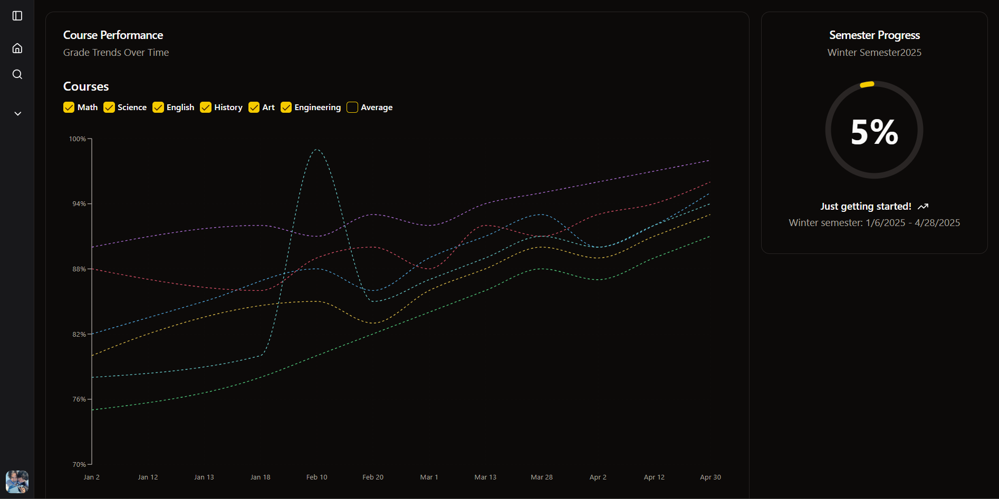

Doro.study

Doro.study is a sleek, modern grade-tracking tool built for university students, designed to replace clunky spreadsheets and overcomplicated apps. Developed for DeltaHacks 11, it simplifies academic tracking by using Gemini web scraping to auto-populate course weightings and deadlines from online outlines. With intuitive visuals, hassle-free setup, and a clean design, Doro.study helps students stay on top of their coursework effortlessly. Built with Next.js, React, and databases, it delivers a smart, stress-free solution for academic organization.
Python
Selenium
Gemini Structured Output
React
BeautifulSoup 4
Next.js
Supabase